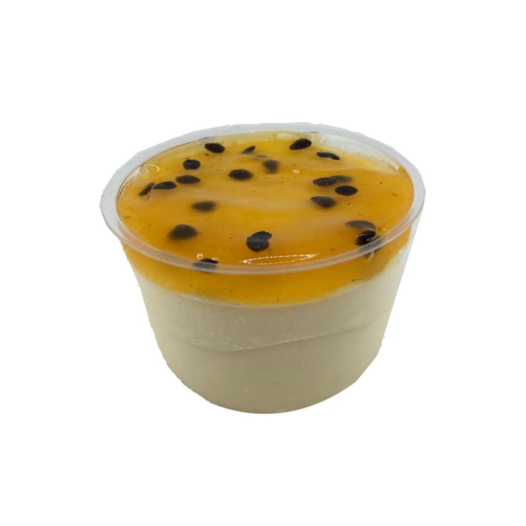

Mousse De Maracujá

Ingredientes
- 1 lata de leite condensado.
- 1 lata de suco de maracujá (medida pela lata de leite condensado).
- 1 lata de creme de leite sem soro.
Modo De Preparo
- Em um liquidificador, bata o creme de leite, o leite condensado e o suco concentrado de maracujá.
- Em uma tigela, despeje a mistura e leve à geladeira por, no mínimo, 4 horas.